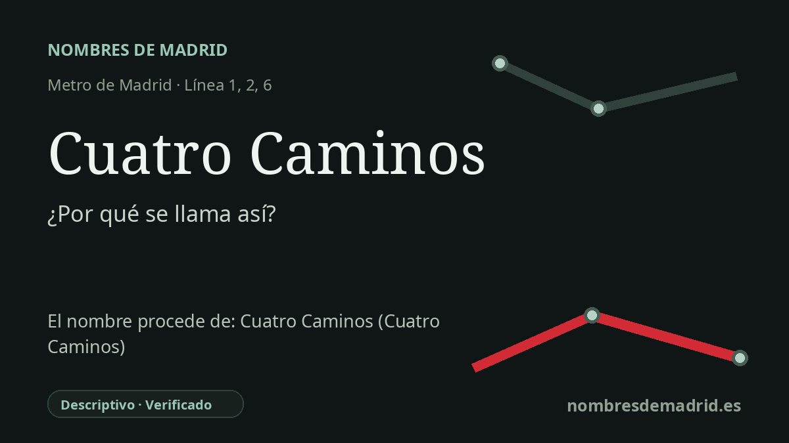

Publicado el · Investigación de Nombres de Madrid · Cómo verificamos cada origen · 6 fuentes consultadas
Respuesta rápida
Cuatro Caminos recibe el nombre de la glorieta histórica situada sobre la estación, una encrucijada del norte de Madrid donde confluían varios caminos antiguos. Fue una de las ocho estaciones del primer tramo del Metro madrileño, inaugurado entre Sol y Cuatro Caminos el 17 de octubre de 1919.
La historia del nombre
Cuatro Caminos es uno de los nombres más literales del Metro de Madrid: designa una confluencia de caminos. La estación recibe el nombre de la Glorieta de Cuatro Caminos, la rotonda y encrucijada asociada directamente a la estación, no de una persona, un santo ni un acontecimiento político.
El topónimo antiguo describe un cruce situado en el borde norte de Madrid. La ficha histórica de Metro de Madrid explica la glorieta por las grandes vías que confluyen en ella: Bravo Murillo, antigua carretera de Irún; Santa Engracia; Reina Victoria, antigua Vereda de Aceiteros; y Raimundo Fernández Villaverde, antiguo Paseo de Ronda. La tradición toponímica madrileña recogida en Madripedia a partir del diccionario de María Isabel Gea matiza el origen más antiguo: atribuye el nombre al camino de Aceiteros, al cruce de la carretera de Francia por Bravo Murillo y a Santa Engracia, mientras que las calles posteriores modificaron la forma física del cruce.
La estación convirtió esa encrucijada en uno de los lugares fundacionales del transporte moderno madrileño. Cuatro Caminos formó parte del primer tramo del Metro de Madrid, inaugurado el 17 de octubre de 1919 entre Sol y Cuatro Caminos. En ese momento fue la cabecera norte de la primera línea de metro de España y ayudó a conectar el centro de la ciudad con una zona obrera y en rápida urbanización situada más allá del núcleo antiguo.
El nombre concentra además varias capas de historia urbana. El entorno de la glorieta fue antes un paisaje periférico de caminos, arrabales, servicios y, después, nuevas viviendas e instalaciones industriales. La documentación histórica de Metro relaciona la posición estratégica de la estación con las primeras cocheras y talleres de la red y con el desarrollo urbano de la avenida de la Reina Victoria y del área próxima al antiguo Stadium Metropolitano.
La precisión importante es que los “cuatro caminos” no son simplemente una lista intemporal de las bocacalles modernas visibles hoy. Las fuentes presentan ligeras diferencias porque describen momentos distintos de la evolución del cruce; la interpretación mejor apoyada es que Cuatro Caminos es un topónimo descriptivo histórico de la encrucijada, consolidado como nombre de estación desde la inauguración de 1919. La glorieta tuvo otros nombres oficiales en el siglo XX, como Ruiz Giménez y Catorce de Abril, pero no se ha encontrado que la estación circulara públicamente con otro nombre.